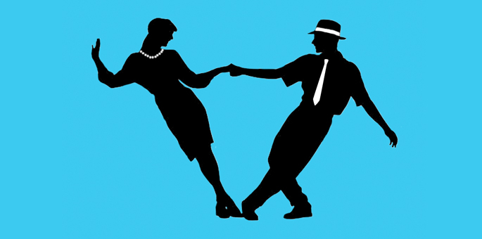
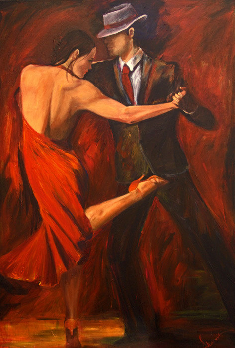

Dance is a performance art form consisting of purposefully selected sequences of human movement. This movement has aesthetic and symbolic value, and is acknowledged as dance by performers and observers within a particular culture.[nb 1] Dance can be categorized and described by its choreography, by its repertoire of movements, or by its historical period or place of origin.
"gsdgsdf sdfgsdf sdf gsd"
An important distinction is to be drawn between the contexts of theatrical and participatory dance,[4] although these two categories are not always completely separate; both may have special functions, whether social, ceremonial, competitive, erotic, martial, or sacred/liturgical. Others disciplines of human movement are sometimes said to have a dance-like quality, including martial arts, gymnastics, figure skating, synchronized swimming and many other forms of athletics.
The following varieties of dance are listed:

"Swing dance" is a group of dances that developed with the swing style of jazz music in the 1920s-1950s, the origin of the dances predating popular "swing era" music. The most well-known of these dances is the Lindy Hop, a fusion of jazz, tap, breakaway, and Charleston, which originated in Harlem in the early 1920s, but includes a number of other styles such as Balboa, Shag, West Coast Swing, and Boogie Woogie to name a few.[1] While the majority of swing dances began in African American communities as vernacular African American dances, some swing era dances such as West Coast Swing and the Balboa developed in white communities. Swing dance was not used as a blanket term for this group of dances until the latter half of the twentieth century. Historically, the term "Swing" referred to the style of Jazz music, which inspired the evolution of the dance.
Salsa is a popular form of social dance that originated in Cuba and Puerto Rico, with influences from various countries in Latin America. Using the name "salsa" for the dance started in New York during the 1970's. The movements of salsa have their origins in Cuban Son, Cha-cha-cha, Mambo and other dance forms, and the dance, along with salsa music,[1][2][3] originated in the mid-1970s in New York.

Tango is a partner dance that originated in the 1890s along the River Plate, the natural border between Argentina and Uruguay, and soon spread to the rest of the world.
Early tango was known as tango criollo (Creole tango). Today, there are many forms of tango extant. Popularly and among tango dancing circles, the authentic tango is considered to be the one closest to the form originally danced in Argentina and Uruguay.
On August 31, 2009 UNESCO approved a joint proposal by Argentina and Uruguay to include the tango in the UNESCO Intangible Cultural Heritage Lists